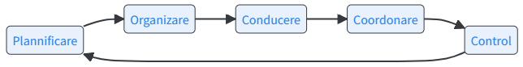

1 Introducere în analiza datelor
1.1 Importanța datelor în luare deciziilor
Definirea conceptului de analiză a datelor
Analiza datelor reprezintă procesul de examinare, curățare, transformare și modelare a datelor cu scopul de a descoperi informații utile, de a trage concluzii și de a susține luarea deciziilor informate. Acest proces implică utilizarea unor tehnici și metode statistice și computaționale care permit identificarea tiparelor și relațiilor ascunse în datele brute (en. raw data).
Datele brute sunt informații în forma lor neprelucrată, care pot proveni din surse multiple, cum ar fi bazele de date interne ale unei organizații, statistici guvernamentale, date financiare sau date generate de utilizatorii unei platforme digitale. Prin analiza acestor date, decidenții pot obține perspective valoroase care îi ajută să adopte strategii eficiente, să îmbunătățească procesele și să maximizeze resursele disponibile.
Importanța datelor în funcțiile managementului
Analiza și utilizarea eficientă a datelor contribuie la îndeplinirea fiecărei funcții de management, conform teoriei clasice a managementului: planificare, organizare, conducere, coordonare și control.

Datele joacă un rol esențial în susținerea tuturor funcțiilor managementului, contribuind la luarea deciziilor mai bine fundamentate și la optimizarea performanței organizaționale. Să analizăm cum sunt datele integrate în fiecare dintre aceste funcții:
1. Planificarea
Planificarea este prima și cea mai importantă funcție a managementului, deoarece stabilește obiectivele și strategia pentru atingerea acestora. Analiza datelor este esențială în acest proces, oferind informații precise care permit decidenților să:
- Proiecteze scenarii și previziuni: Utilizarea datelor istorice și a prognozelor statistice permite managerilor să anticipeze tendințele viitoare, riscurile și oportunitățile.
- Stabilească obiective măsurabile: Datele oferă o bază concretă pentru setarea unor obiective clare și realiste, care pot fi monitorizate și ajustate în timp.
- Evalueze resursele disponibile: Datele financiare și operaționale ajută managerii să înțeleagă mai bine ce resurse (umane, financiare, materiale) sunt disponibile și cum pot fi acestea utilizate mai eficient.
Exemplu practic: O companie de retail dorește să își extindă rețeaua de magazine în alte regiuni. Managerii colectează date despre comportamentul consumatorilor, venituri medii pe cap de locuitor, și tendințele pieței din mai multe regiuni. Prin analizarea datelor disponibile, aceștia pot:
- Identifica cele mai promițătoare regiuni: Pe baza datelor, se poate stabili unde există cerere ridicată pentru produsele oferite de companie.
- Proiecta venituri viitoare: Utilizând modele predictive, managerii pot estima veniturile potențiale pentru fiecare regiune.
- Planifica alocarea resurselor: Datele financiare și de resurse umane ajută la determinarea costurilor necesare pentru extindere și la alocarea eficientă a bugetului.
2. Organizarea
Funcția de organizare se referă la structurarea resurselor și activităților pentru a atinge obiectivele organizaționale. Datele sunt esențiale pentru:
Alocarea resurselor: Analiza datelor privind performanțele departamentelor sau echipelor permite managerilor să aloce resursele în mod eficient, acolo unde sunt cele mai necesare.
Structurarea proceselor: Datele despre fluxurile de lucru și activitățile operaționale pot dezvălui zonele ineficiente, permițând optimizarea proceselor și îmbunătățirea productivității.
Definirea responsabilităților: Analiza performanței individuale și colective, pe baza datelor, ajută la o mai bună definire a sarcinilor și responsabilităților în cadrul echipelor.
Exemplu practic: O instituție publică dorește să eficientizeze procesul de alocare a resurselor pentru un proiect de infrastructură. Analiza datelor istorice despre termenele de livrare și costurile diferitelor furnizori le permite managerilor să:
- Selecteze cei mai buni furnizori: Pe baza datelor privind performanța furnizorilor anteriori (calitatea, costurile și punctualitatea), managerii pot lua decizii informate pentru contractarea serviciilor.
- Optimizeze distribuția resurselor: Datele despre utilizarea anterioară a resurselor (materiale, echipamente) ajută la organizarea stocurilor și evitarea supraproducției sau a blocajelor de aprovizionare.
- Definirea responsabilităților: Analiza datelor de performanță ale echipelor ajută la repartizarea sarcinilor în funcție de abilitățile și istoricul fiecărui membru al echipei.
3. Conducerea
Funcția de conducere (leadership) presupune motivarea și ghidarea echipei către atingerea obiectivelor organizaționale. Datele sprijină această funcție prin:
Monitorizarea performanței: Managerii pot utiliza datele pentru a urmări performanțele angajaților și pentru a oferi feedback în timp real, ajutând la menținerea moralului și motivației.
Stabilirea de obiective clare pentru echipă: Utilizarea datelor pentru a stabili obiective individuale și de echipă care sunt realiste și măsurabile.
Dezvoltarea abilităților: Datele referitoare la nevoile de formare și dezvoltare profesională permit managerilor să identifice domeniile în care echipa lor ar putea beneficia de instruire suplimentară.
Exemplu practic: Un manager de echipă dintr-o companie de IT dorește să îmbunătățească performanța echipei. El analizează datele privind productivitatea fiecărui membru al echipei și feedbackul de la evaluările periodice. În baza acestor date:
- Stabilește obiective personalizate: Managerul setează obiective clare pentru fiecare membru al echipei în funcție de competențele și performanțele anterioare.
- Oferă feedback continuu: Folosind date de performanță în timp real, managerul oferă feedback regulat și ajută echipa să se concentreze pe punctele forte și să îmbunătățească punctele slabe.
- Motivarea echipei: Managerul folosește datele pentru a identifica momentele în care angajații au nevoie de sprijin suplimentar sau de recunoaștere pentru munca bine făcută, crescând astfel moralul echipei.
4. Coordonarea
Coordonarea implică integrarea activităților și resurselor pentru a atinge obiectivele în mod coerent și eficient. Datele permit o coordonare eficientă prin:
- Sincronizarea activităților: Analiza datelor despre calendarul proiectelor și resursele disponibile ajută managerii să coordoneze eforturile echipelor și departamentelor, evitând blocajele.
- Fluxuri de informații: Datele sunt esențiale pentru a asigura un flux continuu de informații între departamente și echipe, reducând astfel riscul de erori și întârzieri.
- Gestionarea resurselor în timp real: Instrumentele de analiză a datelor permit managerilor să vadă în timp real starea resurselor și să facă ajustări rapide pentru a menține echilibrul în activități.
Exemplu practic: O fabrică de producție utilizează analiza datelor pentru a coordona mai eficient fluxurile de producție între departamente. Prin colectarea și analizarea datelor despre stocurile de materii prime, capacitatea de producție și cerințele de livrare, managerii:
- Asigură sincronizarea proceselor: Datele în timp real despre stocuri și termene de producție permit echipelor să își ajusteze fluxurile de lucru pentru a evita întârzierile sau stocurile prea mari.
- Reduce riscul de blocaje: Managerii pot identifica în avans problemele potențiale de aprovizionare sau întârzierile în producție și pot coordona acțiunile pentru a preveni blocajele.
- Gestionarea resurselor eficient: Datele privind productivitatea fiecărui departament ajută managerii să aloce resursele (timp, materiale, personal) în funcție de nevoile reale.
5. Controlul
Funcția de control este esențială pentru a monitoriza progresul și a asigura că organizația atinge obiectivele stabilite. Analiza datelor joacă un rol crucial în:
- Evaluarea performanței: Datele sunt utilizate pentru a măsura performanțele în raport cu obiectivele stabilite. Analizele periodice permit managerilor să vadă unde sunt deviații și să intervină pentru a corecta cursul.
- Corectarea deviațiilor: Datele oferă o imagine clară asupra abaterilor de la planul inițial, permițând managerilor să implementeze măsuri corective pentru a readuce organizația pe drumul cel bun.
- Raportarea performanței: Utilizarea datelor pentru a genera rapoarte detaliate și tablouri de bord ajută la monitorizarea continuă a performanțelor și la identificarea problemelor înainte ca acestea să devină critice.
Exemplu practic: Un manager dintr-o companie de servicii financiare utilizează datele de performanță ale angajaților și indicatorii financiari pentru a evalua eficiența unui program recent implementat. Folosind dashboard-uri PowerBI, managerul:
- Monitorizează în timp real obiectivele: Dashboard-urile permit urmărirea progresului către obiectivele financiare și operaționale stabilite.
- Identifică deviațiile: Managerul poate observa rapid când o echipă sau un departament nu îndeplinește obiectivele stabilite și poate interveni pentru a oferi suport sau pentru a ajusta strategia.
- Propune măsuri corective: Pe baza analizelor de date, managerul poate ajusta bugetul, aloca resurse suplimentare sau redefini procesele pentru a readuce proiectul pe calea cea bună.
În această secțiune am văzut cum datele sunt un element central pentru îndeplinirea tuturor funcțiilor managementului, oferind suport pentru decizii bine informate și pentru optimizarea proceselor în organizații. Fie că este vorba despre planificarea pe termen lung sau evaluarea performanței zilnice, datele oferă managerilor o imagine obiectivă și clară asupra realității organizaționale.
De ce este analiza datelor esențială pentru luarea deciziilor?
Decizii bazate pe fapte și dovezi: În loc de a lua decizii pe baza instinctelor sau a intuiției, organizațiile moderne se bazează din ce în ce mai mult pe date pentru a ghida acțiunile și strategiile lor. Analiza datelor oferă o bază factuală solidă pentru luarea deciziilor, reducând riscurile asociate cu incertitudinea și lipsa de informații.
Identificarea tendințelor și tiparelor: Analiza datelor ajută la identificarea tendințelor emergente, a modelelor de comportament sau a anomaliilor care pot semnala oportunități sau riscuri. De exemplu, în sectorul financiar, analiza datelor poate dezvălui tendințe ale pieței sau poate identifica riscuri financiare iminente.
Optimizarea resurselor: Prin examinarea detaliată a datelor, organizațiile pot identifica zonele în care resursele sunt utilizate ineficient și pot ajusta procesele pentru a îmbunătăți eficiența și a reduce costurile. Acest lucru este valabil atât pentru instituțiile publice, care trebuie să gestioneze bugete limitate, cât și pentru companiile private care doresc să maximizeze profiturile.
Monitorizarea performanței: Analiza datelor permite organizațiilor să monitorizeze și să evalueze performanța programelor și inițiativelor în timp real, permițând ajustări rapide atunci când este necesar. Acest lucru este esențial în contextul economico-financiar, unde piețele și condițiile economice se pot schimba rapid.
Susținerea inovației: Prin explorarea datelor, organizațiile pot descoperi noi oportunități de creștere și inovație, fie că este vorba de dezvoltarea unor produse noi, fie de optimizarea operațiunilor existente.
În esență, analiza datelor nu doar că ajută la înțelegerea mai profundă a situațiilor curente, dar permite și previzionarea evoluțiilor viitoare, oferind decidenților informații esențiale pentru a naviga provocările economice și financiare.
1.2 Identificarea seturilor de date relevante
Identificarea seturilor de date relevante este un pas esențial în procesul de analiză a datelor, deoarece calitatea și relevanța informațiilor folosite pot influența direct acuratețea concluziilor și eficiența deciziilor luate. Fie că vorbim despre sectorul public sau privat, este esențial ca analiza datelor să se bazeze pe informații corecte, complete și relevante pentru obiectivele definite.
Posibile etape în identificarea seturilor de date relevante
Definirea obiectivelor analizei. Înainte de a începe căutarea datelor, este crucial să fie definite clar obiectivele analizei, asa cum am aratat și într-o secțiune precedentă. La ce întrebări se dorește să se răspundă? Ce rezultate se așteaptă să fie obținute? De exemplu, în cazul unei instituții publice care analizează performanțele bugetare, datele financiare și de execuție bugetară vor fi de interes. Definirea clară a obiectivelor ajută la filtrarea și identificarea celor mai relevante seturi de date.
Determinarea surselor de date disponibile. Odată ce obiectivele sunt stabilite, următorul pas este identificarea surselor potențiale de date. Aceste surse pot fi interne (de exemplu, baze de date organizaționale) sau externe (de exemplu, date guvernamentale, statistici publice, date de piață). Sursele comune de date includ:
- Surse publice: Eurostat, Institutul Național de Statistică (INS), OCDE, Banca Mondială, UNData.
- Surse private: Baze de date ale companiilor private, cum ar fi Bloomberg, Thomson Reuters, sau datele disponibile de la firme de consultanță.
- Surse interne: Date colectate de către organizație, cum ar fi rapoartele financiare interne, datele despre performanțele operaționale sau bazele de date cu clienți.
- Evaluarea calității datelor. Nu toate datele disponibile sunt de încredere sau relevante pentru analiza propusă. Este esențial să se evalueze calitatea datelor înainte de utilizarea acestora. Criteriile principale de evaluare includ:
- Acuratețea: Datele trebuie să fie corecte și validate.
- Actualitatea: Datele trebuie să fie actualizate și relevante pentru perioada de interes.
- Completitudinea: Seturile de date nu trebuie să conțină informații lipsă sau incomplete, deoarece acest lucru poate afecta acuratețea analizei.
- Consistența: Datele din surse diferite ar trebui să fie consistente și să urmeze aceleași reguli de structurare și format.
Relevanța datelor pentru obiectivele analizei. După evaluarea calității, este important să se asigure că datele colectate sunt relevante pentru întrebările la care se dorește răspuns. Aceasta înseamnă să se selecteze acele date care oferă informații utile pentru analiza în cauză. De exemplu, dacă obiectivul este analiza veniturilor într-o regiune, datele despre veniturile medii per locuitor și cheltuielile de consum vor fi esențiale.
Accesibilitatea și utilizarea datelor. Seturile de date pot fi disponibile în diverse formate (CSV, XML, JSON etc.), iar accesul la acestea poate varia. Unele date pot fi liber accesibile (Open Data), în timp ce altele pot necesita acces special sau abonament (de exemplu, în cazul bazelor de date comerciale). Este esențial să se asigure că datele pot fi descărcate, prelucrate și integrate cu ușurință în software-ul de analiză folosit.
Asigurarea conformității cu reglementările privind protecția datelor. În special când lucrăm cu date personale, este important să respectăm reglementările privind protecția datelor (de exemplu, GDPR în Uniunea Europeană). Acest lucru presupune verificarea că seturile de date respectă normele legale și etice privind colectarea și utilizarea informațiilor personale.
Exemple practice de identificare a seturilor de date relevante
- Analiza economică într-o instituție publică
O administrație publică dorește să analizeze performanțele economice regionale pentru a stabili unde ar trebui să investească în infrastructură. Sursele de date relevante pot include:
- Date de la Institutul Național de Statistică (INS) despre produsul intern brut (PIB) pe regiuni.
- Informații de la Eurostat privind rata șomajului, venitul mediu pe cap de locuitor și nivelurile de investiții regionale.
- Date din rapoartele bugetare locale pentru a evalua capacitatea de investiții în fiecare regiune.
- Analiza pieței pentru o companie privată
O companie de retail dorește să intre pe o piață nouă și are nevoie de date despre comportamentul consumatorilor și concurența în acea regiune. Sursele de date relevante pot include:
- Date demografice și despre venitul pe cap de locuitor din bazele de date publice, cum ar fi OCDE sau UNData.
- Date despre preferințele de consum și obiceiurile de cumpărare din surse private sau studiile de piață realizate de companii de cercetare.
- Date din propriile sisteme de management al clienților (CRM) pentru a înțelege tiparele de achiziție ale clienților actuali.
- Monitorizarea performanței bugetare într-o instituție publică
O primărie dorește să își evalueze performanțele bugetare pentru a optimiza cheltuielile și veniturile. Seturile de date relevante includ:
- Execuția bugetară anuală și trimestrială din propriile rapoarte financiare interne.
- Date privind veniturile din taxe și impozite colectate de la serviciile de finanțe.
- Date privind cheltuielile de capital și de funcționare pentru fiecare departament din primărie.
Datele colectate trebuie să fie de înaltă calitate, relevante pentru obiectivele organizaționale și accesibile într-un format compatibil cu software-urile de analiză utilizate. În plus, trebuie să se respecte reglementările privind protecția datelor și să se folosească surse de încredere.
1.2.1 Surse de date publice și private, inclusiv Open Data
Datele utilizate în analiza economico-financiară pot proveni dintr-o varietate de surse, fie publice, fie private. În ultimii ani, o sursă importantă de date a devenit și Open Data, un concept care promovează accesul liber și gratuit la informațiile colectate de instituțiile publice. În acest subcapitol vom explora diferitele surse de date, modalitățile de accesare a acestora, și exemple concrete de utilizare a datelor publice, private și deschise (Open Data).
Surse de date publice
Sursele de date publice sunt furnizate de guverne, organizații internaționale și instituții publice și sunt de obicei accesibile fără costuri pentru utilizatori. Aceste date sunt esențiale pentru analiza economico-financiară, fiind deseori utilizate în raportările oficiale și studiile de cercetare.
Exemple de surse de date publice:
- Eurostat (Oficiul de Statistică al Uniunii Europene)
- Eurostat oferă acces la o gamă largă de date statistice legate de economie, populație, comerț, muncă, mediu și multe altele din toate țările membre ale Uniunii Europene. Aceste date sunt esențiale pentru comparații internaționale și evaluări la nivel european.
- Exemplu de utilizare: Datele Eurostat pot fi folosite pentru analiza produsului intern brut (PIB) al țărilor UE sau pentru a studia ratele șomajului în diferite regiuni europene.
- Institutul Național de Statistică (INS)
- INS furnizează date statistice detaliate despre România, acoperind domenii precum economie, populație, mediu, educație și sănătate. Datele sunt disponibile gratuit prin intermediul platformei online a INS.
- Exemplu de utilizare: O instituție publică poate utiliza datele INS pentru a analiza dinamica populației sau evoluția indicilor de prețuri în diverse regiuni din România.
- OECD (Organizația pentru Cooperare și Dezvoltare Economică)
- OECD oferă acces la o vastă bază de date economice și sociale, inclusiv informații despre comerț internațional, investiții, educație și sănătate. Aceste date sunt extrem de utile pentru comparațiile internaționale și pentru înțelegerea tendințelor globale.
- Exemplu de utilizare: Companiile pot folosi datele OECD pentru a analiza nivelurile de investiții străine directe (ISD) în diferite țări, ca parte a strategiei de expansiune globală.
- UN Data (United Nations Data)
- UN Data oferă acces la date statistice globale furnizate de agențiile Națiunilor Unite. Aceste date acoperă o gamă largă de domenii, de la dezvoltare economică la sănătate și educație.
- Exemplu de utilizare: Analiza dezvoltării durabile pe baza datelor oferite de UN Data, pentru a evalua progresul în atingerea obiectivelor de dezvoltare durabilă (SDG) în diverse regiuni.
Surse de date private
Sursele de date private sunt de obicei disponibile prin intermediul companiilor care colectează și vând date, sau care oferă acces la bazele lor de date pe bază de abonament. Aceste date sunt adesea utilizate pentru analize specializate și pentru luarea deciziilor strategice în mediul privat.
Exemple de surse de date private:
- Bloomberg
- Bloomberg oferă date financiare în timp real despre piețele de capital, tranzacții comerciale și economie globală. Aceste date sunt folosite de bănci, firme de investiții și companii pentru a lua decizii financiare bine informate.
- Exemplu de utilizare: O firmă de investiții poate utiliza datele Bloomberg pentru a analiza tendințele piețelor bursiere și a lua decizii de tranzacționare.
- Thomson Reuters
- Thomson Reuters furnizează date financiare și economice din surse globale, fiind un lider în furnizarea de informații pentru piețele financiare. Companiile folosesc aceste date pentru a analiza performanțele piețelor și pentru a realiza previziuni economice.
- Exemplu de utilizare: Analiza tendințelor pieței de obligațiuni și evaluarea riscurilor asociate cu investițiile în diferite regiuni.
- Companii de cercetare de piață (ex. Nielsen, GfK)
- Aceste companii colectează și vând date despre comportamentele de consum, preferințele de piață și tendințele de cumpărare. Datele lor sunt folosite de companii pentru a înțelege mai bine preferințele clienților și pentru a ajusta strategiile de marketing.
- Exemplu de utilizare: O companie de retail poate folosi datele de cercetare de piață de la Nielsen pentru a înțelege comportamentele de achiziție dintr-o anumită regiune și pentru a ajusta sortimentul de produse în funcție de aceste date.
- Baze de date specializate
- Acestea includ surse care oferă date sectoriale sau foarte specializate, cum ar fi date despre energia globală (de la IHS Markit) sau despre agricultura globală (de la FAPRI). Aceste date sunt utile pentru analize foarte specifice din diverse industrii.
Open Data
Open Data reprezintă o inițiativă globală care promovează accesul liber și deschis la datele colectate de instituțiile publice, pentru a încuraja inovația și transparența. Aceste date sunt disponibile gratuit și pot fi reutilizate, redistribuite și integrate în orice analiză, fiind o resursă importantă atât pentru sectorul public, cât și pentru cel privat.
Exemple de surse Open Data:
- Portalul european de date (European Data Portal)
- Acesta oferă acces la un număr mare de seturi de date din întreaga Uniune Europeană, acoperind domenii precum transportul, energia, sănătatea și administrația publică. Seturile de date sunt actualizate constant și sunt accesibile gratuit.
- Exemplu de utilizare: O companie care dorește să implementeze soluții de energie regenerabilă poate utiliza datele despre consumul de energie și resursele disponibile în diferite țări europene pentru a face analize comparative.
- Data.gov (SUA)
- Acesta este portalul de date deschise al guvernului SUA și oferă acces la sute de mii de seturi de date din diverse domenii, de la educație și sănătate la siguranță publică și mediu.
- Exemplu de utilizare: Un start-up poate utiliza datele de la Data.gov pentru a dezvolta aplicații care sprijină transparența guvernamentală sau pentru a crea noi soluții tehnologice bazate pe date publice.
- Portaluri locale de date deschise (ex. date.gov.ro)
- Portalurile de date deschise la nivel local sau național oferă acces la seturi de date relevante pentru regiuni sau țări specifice. De exemplu, data.gov.ro oferă acces la datele publice din România.
- Exemplu de utilizare: O primărie poate folosi datele publice deschise pentru a analiza distribuția geografică a locuințelor și pentru a decide unde să aloce fonduri pentru infrastructura locală.
- data.gov.ro (România)
- Punct central de acces pentru seturile de date deschise livrate de autoritățile și instituțiile administrației publice, ajutând publicul să găsească, să descarce și să folosească informațiile generate și deținute de structurile administrative.
1.2.2 Evaluarea calității și relevanței datelor
Evaluarea calității și relevanței datelor este un pas critic în procesul de analiză a datelor economico-financiare. Datele de calitate scăzută sau nerelevante pot duce la concluzii greșite și la decizii nefundamentate. Prin urmare, este esențial să fie evaluate din perspectiva acurateței, completitudinii, consistenței și actualității lor înainte de a fi utilizate în orice analiză.
Dimensiuni esențiale în evaluarea calității datelor
- Acuratețea (Corectitudinea datelor)
Acuratețea se referă la măsura în care datele reflectă realitatea în mod corect. Datele inexacte sau eronate pot distorsiona rezultatele analizei, conducând la decizii greșite. Exemplu: Dacă un set de date economice privind rata șomajului conține erori sau discrepanțe, analiza ulterioară va reflecta o imagine falsă a pieței muncii, ducând la concluzii incorecte cu privire la politicile de ocupare a forței de muncă.
Cum evaluăm acuratețea:
- Compararea datelor cu alte surse independente și de încredere.
- Verificarea logicii interne a datelor pentru a identifica anomalii (ex: valori negative acolo unde nu ar trebui să fie).
- Verificarea datelor colectate manual sau automatizate pentru a detecta eventuale erori de introducere.
- Completitudinea
Completitudinea datelor se referă la prezența tuturor valorilor necesare pentru a realiza o analiză corectă. Seturile de date incomplete pot distorsiona rezultatele analizei, mai ales atunci când lipsesc valori esențiale sau variabile importante.
Exemplu: Dacă datele despre cheltuielile bugetare ale unei instituții publice lipsesc pentru o anumită perioadă de timp, este imposibil să se realizeze o analiză completă a performanței financiare pentru acea perioadă.
Cum evaluăm completitudinea:
- Verificarea existenței valorilor lipsă sau “missing data”.
- Utilizarea tehnicilor de imputare a valorilor lipsă (ex: medii, valori mediane) dacă datele lipsesc într-o proporție mică.
- Evaluarea impactului valorilor lipsă asupra obiectivelor analizei (dacă lipsa acestora poate afecta semnificativ rezultatele).
- Consistența (Coerența datelor) Consistența se referă la măsura în care datele sunt armonizate și respectă aceleași reguli și formate, mai ales atunci când provin din surse diferite. Inconsistențele în structura sau formatul datelor pot crea probleme atunci când seturile de date sunt combinate sau comparate.
Exemplu: Într-o analiză economică la nivel internațional, datele despre PIB pot fi raportate în monede diferite sau pe ani diferiți. Lipsa conversiei corecte poate duce la erori majore în interpretarea rezultatelor.
Cum evaluăm consistența:
- Verificarea formatelor de date (ex: verificarea unităților de măsură – mii, milioane, procente).
- Asigurarea că valorile au aceeași granularitate temporală (ex: date anuale, trimestriale) și spațială (ex: la nivel de țară, regiune).
- Verificarea metadatelor pentru a înțelege proveniența și metodele de colectare ale fiecărui set de date.
- Actualitatea (Timeliness)
Actualitatea se referă la cât de recent au fost colectate și actualizate datele. În anumite cazuri, datele vechi pot fi irelevante, în special într-un mediu dinamic cum este economia globală sau sectorul financiar.
Exemplu: Într-o analiză a pieței imobiliare, utilizarea datelor vechi de 5 ani poate duce la concluzii eronate, deoarece prețurile și tendințele pieței s-au schimbat între timp.
Cum evaluăm actualitatea:
- Verificarea datei ultimei actualizări a seturilor de date.
- Asigurarea că datele utilizate corespund perioadei de timp relevante pentru analiza propusă.
- Compararea periodică a datelor cu surse noi sau actualizate pentru a asigura relevanța și acuratețea acestora.
- Relevanța
Relevanța datelor se referă la măsura în care datele sunt potrivite pentru a răspunde la întrebările sau obiectivele analizei. Chiar dacă un set de date este corect și complet, poate fi irelevant pentru analiza curentă dacă nu oferă informații utile pentru deciziile care trebuie luate.
Exemplu: Dacă scopul este analiza performanței financiare a unei companii, datele despre satisfacția clienților, deși valoroase în alt context, nu sunt relevante pentru această analiză specifică.
Cum evaluăm relevanța:
- Verificarea dacă datele răspund direct întrebărilor de analiză.
- Asigurarea că seturile de date includ variabilele și indicatorii specifici obiectivelor analizei.
- Evitarea utilizării excesive de date care pot complica analiza fără a aduce valoare adăugată.
Factori suplimentari în evaluarea calității datelor
- Proveniența datelor (sursa datelor). Este esențial să se știe de unde provin datele și cum au fost colectate. Datele colectate din surse necredibile sau neautorizate pot compromite întreaga analiză. Sursele de date oficiale și bine cunoscute, precum instituțiile statistice naționale sau organizațiile internaționale, sunt de obicei preferabile.
Cum evaluăm proveniența datelor:
- Verificarea reputației sursei care furnizează datele.
- Evaluarea metodologiei de colectare a datelor.
- Utilizarea metadatelor pentru a înțelege procesele de curățare și prelucrare aplicate datelor.
- Documentația și metadatele. Un set de date de calitate ar trebui să fie însoțit de documentație și metadate care să explice modul în care datele au fost colectate, prelucrate și structurate. Fără metadate, este dificil să se înțeleagă contextul și limitările datelor.
Cum evaluăm documentația și metadatele:
- Verificarea existenței unui fișier cu metadate care descrie variabilele, unitățile de măsură și metodele de colectare.
- Asigurarea că documentația este clară și ușor de înțeles.
- Analizarea oricăror limitări sau precauții menționate în documentație care ar putea afecta analiza.
- Transparența și verificabilitatea Datele trebuie să fie transparente, în sensul că pot fi verificate și validate de către alte părți interesate. Această caracteristică este importantă mai ales în contextul instituțiilor publice, care trebuie să demonstreze transparență și responsabilitate în utilizarea și interpretarea datelor.
Cum evaluăm transparența:
- Verificarea posibilității de a reproduce analiza pe baza datelor disponibile.
- Asigurarea că sursele de date pot fi accesate și validate de către terți.
- Verificarea că datele sunt prezentate într-un format accesibil și fără ambiguități.
Evaluarea calității și relevanței datelor este un proces esențial pentru a asigura că analiza datelor economico-financiare este corectă, completă și utilă pentru luarea deciziilor. Un set de date de înaltă calitate oferă un fundament solid pentru analize precise și informații valoroase. Acest proces de evaluare nu trebuie să fie neglijat, indiferent dacă datele provin din surse publice, private sau din Open Data.
1.2.3 Utilizarea platformelor de date
• Modalități de acces, descărcare și integrare a datelor • Prezentarea unor platforme comune: Eurostat, INS, UN data, OECD Data
1.3 Concepte de bază legate de formatarea datelor
(formatul și tipurile de date)
1.3.1 Tipuri de surse de date (primare și secundare)
text
1.3.2 Tipuri de fișiere (CSV, XML, JSON) și utilizarea lor
text
1.3.3 Importanța și utilizarea metadatelor
text
1.4 Instrumente și Software pentru Analiza Datelor
1.4.1 Utilizarea Excel pentru analize financiare
text
1.4.2 Utilizarea Power BI pentru analize financiare
text
1.4.3 Introducere în R și Python pentru analize statistice
text